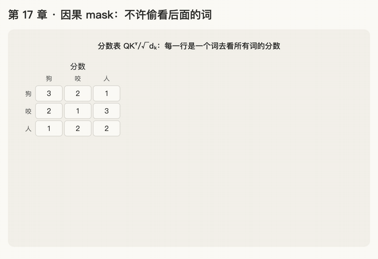

第 17 章 · 因果 mask：不许偷看后面的词
本章回答：模型生成文字时为什么不能看后面的词？attention 里怎么"遮住"后面的词？
讲解日期：2026-11-05 · 上一章：第 16 章 多档时钟 · 下一章：第 18 章 残差连接
对应原文：materials/text/papers/attention-is-all-you-need-1706.03762.txt§3 开头 L113–L116；§3.1 L138–L143；§3.2.3 L232–L238
本章缩写：Q / K / V = Query（查询）/ Key（键）/ Value（值）；\(d_k\)：k = key，每个 key 向量有几个数（64）；softmax = soft（柔和的）+ max（取最大）：按大小分比例，不是只挑最大的；exp = exponential（指数）：exp(x) = eˣ；GPT = Generative Pre-trained Transformer（生成式预训练 Transformer）；NoPE = No Positional Encoding（不加位置编码）；CS336 = Stanford 课程 CS 336（Computer Science 336，Language Modeling from Scratch）。全部缩写见 附录 · 缩写与术语表
讲解
第一步：模型一次说一个词，训练时不能偷看答案（2026-11-05）
模型怎么说话：一次只说一个词，说出来的词接到后面，再根据前面所有的词说下一个。
狗 → 狗咬 → 狗咬人
论文 L115–L116 把这叫 auto-regressive（自回归）：每一步都把"之前生成的词"当作输入，去生成下一个。
训练时怎么练：把整句"狗咬人"一次放进去，让每个座位都猜它的下一个词：
| 座位 | 坐着的词 | 要猜的下一个词 |
|---|---|---|
| 1 号 | 狗 | 咬 |
| 2 号 | 咬 | 人 |
问题：第 9–13 章的 attention 让每个词都能看到句子里所有的词。那 1 号座"狗"在猜下一个词时，一眼就看到 2 号座坐着"咬"，等于直接偷看了答案。这样训练出来的模型，到真正一个词一个词说话时，后面的词还没生成，根本没得看，就不会说了。
类比：听写。 老师念一个字你写一个字。如果练习时答案就印在本子的下一行，你抄着写当然全对，但真到考试没有答案，就写不出来。所以练习时要用纸把后面的答案遮住。
规则（论文 L142–L143、L235–L236）：每个座位只能看自己和前面的座位，不能看后面的。"后面的词"就是"未来"，未来不能影响现在，所以叫因果（causal）mask。
一句话：生成时后面的词还不存在，所以训练时也要把后面的词遮住，不许偷看答案。
第二步：在分数表上遮住哪些格子（2026-11-05）
回顾第 11 章：\(QK^\top\) 是一张分数表，行 = 谁去找，列 = 被找的是谁。第 \(i\) 行第 \(j\) 列 = 第 \(i\) 个词看第 \(j\) 个词的分数。
"遮住后面的词"落到这张表上就是：第 \(i\) 行只保留第 1 到第 \(i\) 列，右边的格子都遮掉。
"狗咬人"的分数表（✓ 能看，✗ 遮住）：
| 谁去找 ↓ \ 被找的 → | 1 狗 | 2 咬 | 3 人 |
|---|---|---|---|
| 1 狗 | ✓ | ✗ | ✗ |
| 2 咬 | ✓ | ✓ | ✗ |
| 3 人 | ✓ | ✓ | ✓ |
看形状：能看的格子是左下方一个三角形（包括对角线：自己看自己）；被遮的是右上方的三角形。所以这种 mask 也叫下三角 mask。
类比：电影院一排排往后坐，大家都面朝屏幕，只能看到前面的人。 第 1 排只看得到自己，第 3 排能看到前两排和自己。
一句话：因果 mask 就是把分数表右上方的三角形遮掉，每一行只留自己和左边。
第三步前的复习：softmax 和 \(e^{x}\)（2026-11-05，应要求复习）
① softmax 是干什么的（第 3 章）：把一行分数变成比例，加起来等于 1，表示注意力分给每个词百分之几。最朴素的做法是每个分数除以总分：[2, 1, 5] → 总分 8 → 0.25、0.125、0.625。
② \(e^{x}\) 是什么（第 5 章）：e ≈ 2.718，\(e^{x}\) 就是"2.718 自己乘自己 x 次"，往左每一格就除以 2.718：
| x | 2 | 1 | 0 | −1 | −2 |
|---|---|---|---|---|---|
| \(e^{x}\) | 7.39 | 2.72 | 1 | 0.37 | 0.14 |
三条要记住的：永远是正数；0 次方等于 1；x 往负的方向走，\(e^{x}\) 越来越小、越来越接近 0，但永远到不了 0。
③ 真正的 softmax（第 6 章）：先把每个分数套上 \(e^{x}\)，再除以总和：
先套 \(e^{x}\) 有两个好处：负分数也变成正的（注意力不会是负的）；分数差 1，\(e^{x}\) 就差 2.718 倍，高分更突出。
一句话：softmax = 每个分数先变成 \(e^{\text{分数}}\)（一定是正数），再除以总和变成比例。相关卡片：R04、R05、R06、R08、R11。
第三步："遮住"到底要做到什么程度（2026-11-05）
回顾第 3、5、6 章 softmax：一行分数先每个都套 \(e^{x}\)，再除以总和，变成加起来等于 1 的权重：
例子：2 号座"咬"那一行，假设三个分数是 [2, 1, 3]（看狗、看咬、看人）：
| 看 1 狗 | 看 2 咬 | 看 3 人 | |
|---|---|---|---|
| 分数 | 2 | 1 | 3 |
| \(e^{\text{分数}}\) | 7.39 | 2.72 | 20.09 |
| 权重（÷ 总和 30.19） | 0.24 | 0.09 | 0.67 |
"咬"有 67% 的注意力放在了 3 号"人"身上，也就是那个它要猜的答案。偷看得很严重。
"遮住"的目标：让被遮的格子在 softmax 之后权重正好是 0，一点都分不到。看公式，权重是 \(e^{\text{分数}}\) 除以总和，所以要让这一格的 \(e^{\text{分数}}\) 等于 0。
一句话：遮住不是"分数小一点"，而是要让这一格 softmax 后的权重变成 0，也就是让它的 \(e^{\text{分数}}\) 变成 0。
第四步：一直负到底：负无穷 −∞（2026-11-05）
接题 3 再练：分数越负，\(e^{\text{分数}}\) 越接近 0。但第 5 章说过，它永远到不了 0：
| 分数 | −1 | −10 | −100 |
|---|---|---|---|
| \(e^{\text{分数}}\) | 0.37 | 0.000045 | 0.000…（小数点后 43 个 0）37 |
不管负多少，总还剩一丁点权重。论文的做法是一直负到底：把被遮的格子设成 −∞（读作"负无穷"）。
−∞ 是什么：不是某一个具体的数，而是"比任何负数都小"。−100、−10000、−1 亿都比它大。
\(e^{-\infty} = 0\)：分数负得没有底，\(e^{\text{分数}}\) 就小得没有底，最后正好是 0。
类比：音量旋钮。 调到 −10、−100，声音很小但还听得见；−∞ 就是直接按了静音键。
代回"咬"那一行，3 号格设成 −∞：
| 看 1 狗 | 看 2 咬 | 看 3 人 | |
|---|---|---|---|
| 分数 | 2 | 1 | −∞ |
| \(e^{\text{分数}}\) | 7.39 | 2.72 | 0 |
| 权重（÷ 总和 10.11） | 0.73 | 0.27 | 0 |
"人"的权重正好是 0，一点都没偷看；剩下的 0.73 + 0.27 还是等于 1，在能看的词之间重新分比例。
论文原文 L236–L238："在 scaled dot-product attention 里，把 softmax 输入中所有对应非法连接的值 mask 掉（设成 −∞）。"代码里写 float('-inf')。
一句话：被遮的格子设成 −∞，因为 \(e^{-\infty} = 0\)，softmax 后权重正好是 0；其他格子自动重新分成加起来等于 1。
第五步：写成公式：给分数表加一张 mask 表（2026-11-05）
做法：再准备一张和分数表一样大的表 \(M\)，能看的格子填 0，要遮的格子填 −∞，然后两张表对位相加。
"狗咬人"的 \(M\)：
| 1 狗 | 2 咬 | 3 人 | |
|---|---|---|---|
| 1 狗 | 0 | −∞ | −∞ |
| 2 咬 | 0 | 0 | −∞ |
| 3 人 | 0 | 0 | 0 |
和第二步那张 ✓ / ✗ 表一模一样，只是 ✓ 换成 0，✗ 换成 −∞。
加上去之后：能看的格子"分数 + 0"，不变；要遮的格子"分数 + (−∞) = −∞"，softmax 后权重变 0。
完整公式（第 12 章公式 1 多了一个 \(+M\)）：
顺序：打分（\(QK^\top\)）→ 缩放（\(\div\sqrt{d_k}\)，第 8 章）→ 加 mask → softmax → 按比例取 \(V\)。mask 一定要加在 softmax 之前。
论文没把 \(M\) 单独写进公式，只在 L236–L238 说"在 scaled dot-product attention 里把 softmax 的输入设成 −∞"，Figure 2 左图里画成一个可选的 Mask 方框（图只在 PDF 里，文本版 L157 只有图注）。CS336 handout §3.5.4（L1168–L1178）就是这么写的：在 softmax 之前的 \(QK^\top/\sqrt{d_k}\) 上，把 mask 为 False 的格子加 −∞；§3.5.5（L1223–L1233）规定因果 mask：第 \(i\) 个词只能看 \(j \le i\) 的位置。
一句话：mask 是一张"能看填 0、要遮填 −∞"的表，在 softmax 之前加到分数表上。
动画演示：给分数表加 mask

可交互版：animations/17-causal-mask.html（要能点按钮、拖滑块，需要用本地服务打开，见 animations/README.md"跑起来看"；滑块调 M 里要遮的格子填多少，拖到最左边是 −∞）。
怎么看：
- 先是"狗咬人"的分数表；不加 mask 直接 softmax，"咬"那一行 67% 给了"人"（红框：偷看答案）；
- 再出现 mask 表 \(M\)（右上三角填 −∞），加到分数上，套 \(e^{x}\)，除以每行总和：被遮的格子（紫色）权重正好是 0，每行仍加起来等于 1；
- 最后把 \(M\) 里要遮的格子从 0 往负数调（0、−2、−5、−10、−∞），只看"咬"那一行："人"的权重越来越小，−10 时还剩 0.00009，只有 −∞ 才正好是 0。
练习与作答记录
题 1："狗咬人"三个座位。2 号座"咬"做 attention 时，可以看哪几个座位？
作答（2026-11-05）："1，2"。✓
点评：对。能看自己（2 号）和前面的 1 号"狗"，不能看后面的 3 号"人"，因为"人"正是它要猜的答案。已加入卡片 R42。
题 2：3 个词的分数表一共 3 × 3 = 9 格，要遮住几格？
作答（2026-11-05）："3"。✓
点评：对。第 1 行遮 2 格，第 2 行遮 1 格，第 3 行遮 0 格，2 + 1 + 0 = 3。剩下能看的是 6 格（左下三角含对角线）。已加入卡片 R43。
题 3：如果把"咬"那一行被遮的 3 号格分数改成 0（分数变成 [2, 1, 0]），\(e^{0}\) 是多少？"人"还分得到权重吗？
作答（2026-11-05，先应要求复习了 softmax 和 \(e^{x}\)）："第一行没有，分不到"。✗（理解为：\(e^{0}\) 是 0、没有值，所以"人"分不到权重）
点评：\(e^{0} = 1\)，不是 0（复习表里 x = 0 那一格；第 5 章：0 次方等于 1）。所以"人"还是分得到：
| 看 1 狗 | 看 2 咬 | 看 3 人 | |
|---|---|---|---|
| 分数 | 2 | 1 | 0 |
| \(e^{\text{分数}}\) | 7.39 | 2.72 | 1 |
| 权重（÷ 总和 11.11） | 0.67 | 0.24 | 0.09 |
"人"还分到 9%，还在偷看。分数 0 不代表"没有"，套上 \(e^{x}\) 之后是 1，照样参与分比例。所以把分数改成 0 遮不住。已加入卡片 R44。
题 3 再练：要让 \(e^{\text{分数}}\) 接近 0，分数应该往大了改，还是往小（负）了改？（看复习表里 \(e^{x}\) 往哪边越来越接近 0）
作答（2026-11-05）："负数"。✓
点评：对。\(e^{-1} = 0.37\)，\(e^{-2} = 0.14\)，越往负的方向越接近 0。第四步接着讲：负到什么程度才够。
题 4：1 号座"狗"那一行分数是 [3, −∞, −∞]（后两格被遮）。softmax 之后三个权重各是多少？
作答（2026-11-05）："0.9998，0.001，0.001"。✗（把 −∞ 当成了"很负的数"，以为还剩一丁点）
点评：应该是 [1, 0, 0]，被遮的两格正好是 0，不是 0.001。
| 看 1 狗 | 看 2 咬 | 看 3 人 | |
|---|---|---|---|
| 分数 | 3 | −∞ | −∞ |
| \(e^{\text{分数}}\) | 20.09 | 0 | 0 |
| 权重（÷ 总和 20.09） | 20.09 ÷ 20.09 = 1 | 0 | 0 |
要分清两件事：
- 很负的数（−10、−100）：\(e^{\text{分数}}\) 很小但不是 0，还剩一丁点（调小音量）；
- −∞：\(e^{-\infty}\) 正好是 0，一点都不剩（按静音键）。这就是论文用 −∞ 而不是 −100 的原因。
另外 0.9998 + 0.001 + 0.001 = 1.0018，超过了 1；softmax 的权重加起来一定正好是 1，可以用来自查。
1 号座只能看自己，所以注意力 100% 给自己。已加入卡片 R45。
题 4 再练：4 个词的句子，2 号座那一行分数是 [1, 1, −∞, −∞]。softmax 之后四个权重各是多少？
作答（2026-11-05）："你说的对，0.5，0.5，0，0"。✓
点评：对。\(e^{1} = 2.72\) 两个一样，后两格 \(e^{-\infty} = 0\)，总和 5.44，所以 0.5、0.5、0、0，加起来正好是 1。被遮的格子正好是 0，剩下的在能看的词之间平分。
题 5：mask 矩阵 \(M\) 里，能看的格子为什么填 0，而不是填 1？
作答（2026-11-05）："需要 e x 再取数值"。半对（说到了"加完还要套 \(e^{x}\)"，没说出填 0 的原因）
点评：顺序对：\(M\) 先加到分数上，然后才套 \(e^{x}\)、算权重。但填 0 的原因在加法这一步：任何分数 + 0 = 原来的分数，加了等于没加，能看的格子原样进 softmax。
容易和第三步混：
| 第三步（题 3） | 第五步（mask 表） | |
|---|---|---|
| 做法 | 把分数换成 0 | 给分数加上 0 |
| 结果 | 2、1、3 → 2、1、0，分数被改了 | 2 + 0 = 2，1 + 0 = 1，分数没变 |
| 作用 | 想遮住，但 \(e^{0} = 1\) 遮不住 | 不遮，保持原样 |
（补充：如果同一行能看的格子都填 1，每个分数都 +1，softmax 只看分数之间的差距，权重其实不变；但填 0 最直接："不动它"，不用多想一步。）已加入卡片 R46。
题 5 再练："咬"那一行分数是 [2, 1, 3]，\(M\) 的那一行是 [0, 0, −∞]。加起来是什么？
作答（2026-11-05）："2，1，−∞"。✓
点评：对。2 + 0 = 2，1 + 0 = 1，3 + (−∞) = −∞。这正是第四步那张表的第一行，softmax 后是 0.73、0.27、0：能看的两格原样保留，"人"被遮掉。
口诀
一次说一个，后面是答案，要遮住；
分数表遮右上角，能看填 0，要遮填 −∞；
e 的 −∞ 次方是 0，剩下的重新分成一。
本章复习卡片
- R42（为什么要因果 mask：生成时一次说一个词，训练时不能偷看后面的答案；每个座位只看自己和前面）
- R43（下三角 mask：分数表右上三角遮掉；3 个词遮 3 格，n 个词遮 n(n−1)/2 格）
- R44（把被遮的分数改成 0 遮不住：\(e^0 = 1\)，[2, 1, 0] 里"人"还分到 9%）
- R45（−∞ 遮住后权重正好是 0：[3, −∞, −∞] → [1, 0, 0]；−100 还剩一丁点，−∞ 一点不剩）
- R46（mask 表能看填 0：分数 + 0 不变；和第三步"把分数换成 0"不是一回事）
附录 · 延伸阅读
留给以后深入学习用，不影响本章主线。★ 是建议先读的。
- 本地论文的文本版在materials/text/papers/，表里的行号就是指这个文本版。
- CS336 handout 在cs336-spring2025/materials/text/cs336_spring2025_assignment1_basics.txt。
推荐阅读
| 读什么 | 读哪里 | 读它为了什么 |
|---|---|---|
| ★ Attention Is All You Need | L113–L116（auto-regressive）；§3.1 L138–L143；§3.2.3 L232–L238 | 本章三处原文：一次生成一个词（第一步）；decoder 不许看后面的位置（第一、二步）；在 softmax 输入里设 −∞（第四、五步） |
| ★ CS336 assignment 1 handout | §3.5.4 Masking（L1168–L1178）；§3.5.5 Causal masking（L1223–L1233） | 动手时要照着实现的写法：布尔 mask，True 能看、False 加 −∞；因果 mask 让第 \(i\) 个词只看 \(j \le i\)，可用 torch.triu 造 |
| Formal Algorithms for Transformers | Algorithm 4 Attention（L327），第 5 行（L356）；Mask 定义 L316–L325；双向 vs 单向 L364、L380–L384 | 伪代码版：if ¬Mask[t_z, t_x] then S ← −∞，和第五步一样；对照"不加 mask（encoder）"和"加因果 mask（decoder / GPT）" |
| Kazemnejad et al. 2023，NoPE | L151、L617 | 第 14 章附录提过：带因果 mask 的 decoder 不加位置编码也能分出顺序。学完本章再读就能看懂为什么：每个位置能看的词数不一样 |
数学原理
- \(e^{-\infty} = 0\) 是极限：\(x\) 越负，\(e^{x}\) 越接近 0，记作 \(\lim_{x\to-\infty} e^{x} = 0\)。任何具体的负数都到不了 0（第四步表格），只有"负到底"才正好是 0。
- softmax 只看差距：同一行每个分数都加同一个数 \(c\)，\(e^{s_j + c} = e^{s_j} e^{c}\)，分子分母都乘 \(e^{c}\)，约掉，权重不变。所以 mask 能看的格子填 0 还是填 1 结果一样，填 0 最直接（题 5 点评）。
- 遮掉的格子数：\(n\) 个词的分数表 \(n^2\) 格，第 \(i\) 行遮 \(n - i\) 格，合计 \(0 + 1 + \dots + (n-1) = n(n-1)/2\)；能看的是 \(n(n+1)/2\) 格。
- 工程细节：代码里用
float('-inf')。有些实现改用一个很负的有限数（如 −1e9 或该数据类型的最小值），因为 −∞ 碰上整行全被遮时会算出 0/0；因果 mask 下每行至少能看自己，不会全遮。
公式清单
| 公式 | 意思 |
|---|---|
| \(\text{Attention}(Q,K,V) = \text{softmax}\!\left(\frac{QK^\top}{\sqrt{d_k}} + M\right) V\) | 带 mask 的 attention：先打分、缩放、加 mask，再 softmax、取 \(V\) |
| \(M_{ij} = 0\ (j \le i)\)，\(M_{ij} = -\infty\ (j > i)\) | 因果 mask：自己和前面能看，后面遮掉（下三角） |
| \(e^{-\infty} = 0\) | 被遮的格子权重正好为 0 |
| \(e^{0} = 1\) | 把分数换成 0 遮不住（题 3） |
| 遮掉 \(n(n-1)/2\) 格 | 3 个词遮 3 格 |